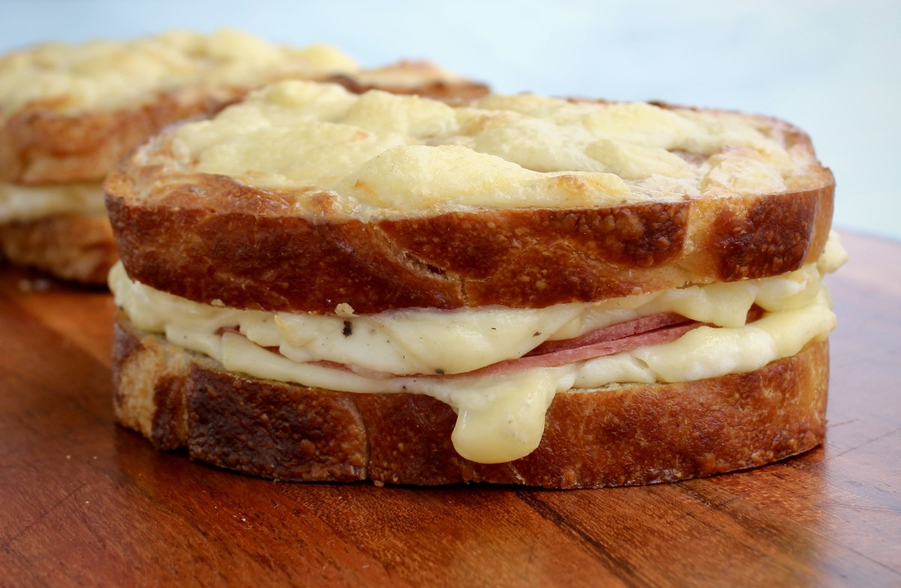

Vegetarian Croque Monsieur

Description
The croque monsieur is simply a ham and cheese sandwich filled with dijon
mustard, grated cheese, and béchamel sauce. It is topped with more
béchamel sauce and cheese before being baked in the oven until crispy and
delicious. To make this a vegetarian croque monsieur I swapped out the ham
for sliced vegan ham.
Ingredients
- White bread
- Vegan ham
- Dijon mustard
- Butter
- Grated cheese
- Béchamel sauce
Steps
-
Firstly, prepare your béchamel sauce. I like to infuse my milk and cream
with onion, garlic and bay leaf before making the sauce. This step is
optional but adds delicious extra flavour.
To infuse your milk and cream simply add it to a pan with the chopped
onion, minced garlic and a bay leaf. Heat the milk until it is almost
boiling and then take off the heat. Leave to infuse for at least 10
minutes before straining and discarding the onion and bay leaf.
To make the béchamel melt your butter in a saucepan over a medium-low
heat. Whisk in the flour and cook for 30 seconds. Gradually add in the
infused milk and whisk until thickened.
-
Now is time to prepare the sandwiches. Butter one side of each slice of
bread and grill until golden.
Flip the bread and spread each slice with dijon mustard and a thin layer
of béchamel. Sprinkle over some grated cheese and a slice of vegan ham.
Use the slices to form 2 sandwiches. Top them with the remaining
béchamel and grated cheese.
-
Bake the sandwiches in the oven for 10-15 minutes until melted and
golden on top.